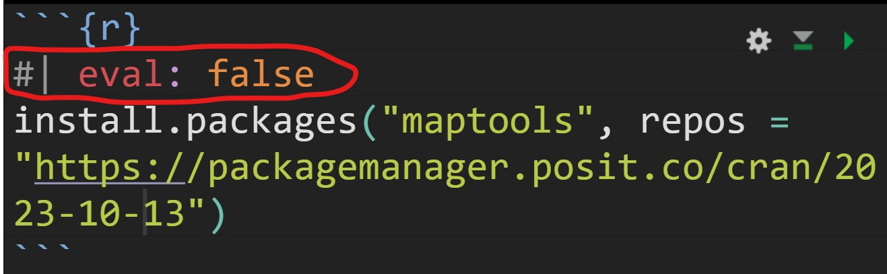

install.packages("maptools",
repos = "https://packagemanager.posit.co/cran/2023-10-13")In-class Exercise 2
Issue 1: Installing maptools
maptools is retired and binary is removed from CRAN. However, I can download from Posit Public Package Manager snapshots by using the code chunk below.
After the installation is completed, it is important to edit the code chunk as shown below in order to avoid maptools being download and install repetitively every time the Quarto document been rendered.

Issue 2: Creating coastal outline
In sf package, there are two functions allow us to combine multiple simple features into one simple features. They are st_combine() and st_union().
st_combine()returns a single, combined geometry, with no resolved boundaries; returned geometries may well be invalid.If y is missing,
st_union(x)returns a single geometry with resolved boundaries, else the geometries for all unioned pairs of x[i] and y[j].
pacman::p_load(sf, raster, spatstat, tmap, tidyverse)childcare_sf <- st_read("data/child-care-services-geojson.geojson") %>%
st_transform(crs = 3414)Reading layer `child-care-services-geojson' from data source
`C:\Users\user\OneDrive - Singapore Management University\MITB\6. Geospatial Analytics and Applications\jeffleesl\ISSS626-GAA\In-class_Ex\In-class_Ex02\data\child-care-services-geojson.geojson'
using driver `GeoJSON'
Simple feature collection with 1545 features and 2 fields
Geometry type: POINT
Dimension: XYZ
Bounding box: xmin: 103.6824 ymin: 1.248403 xmax: 103.9897 ymax: 1.462134
z_range: zmin: 0 zmax: 0
Geodetic CRS: WGS 84mpsz_sf <- st_read(dsn = "data",
layer = "MP14_SUBZONE_WEB_PL") %>%
st_transform(crs = 3414)Reading layer `MP14_SUBZONE_WEB_PL' from data source
`C:\Users\user\OneDrive - Singapore Management University\MITB\6. Geospatial Analytics and Applications\jeffleesl\ISSS626-GAA\In-class_Ex\In-class_Ex02\data'
using driver `ESRI Shapefile'
Simple feature collection with 323 features and 15 fields
Geometry type: MULTIPOLYGON
Dimension: XY
Bounding box: xmin: 2667.538 ymin: 15748.72 xmax: 56396.44 ymax: 50256.33
Projected CRS: SVY21sg_sf <- st_read(dsn = "data",
layer="CostalOutline") %>%
st_transform(crs = 3414)Reading layer `CostalOutline' from data source
`C:\Users\user\OneDrive - Singapore Management University\MITB\6. Geospatial Analytics and Applications\jeffleesl\ISSS626-GAA\In-class_Ex\In-class_Ex02\data'
using driver `ESRI Shapefile'
Simple feature collection with 60 features and 4 fields
Geometry type: POLYGON
Dimension: XY
Bounding box: xmin: 2663.926 ymin: 16357.98 xmax: 56047.79 ymax: 50244.03
Projected CRS: SVY21Working with st_union()
The code chunk below, st_union()is used to derive the coastal outline sf tibble data.frame.
sg_sf <- mpsz_sf %>%
st_union()
plot(sg_sf) 
sg_sf will look similar to the figure below.
plot(sg_sf) 
In order to ensure reproducibility, it is important to include the code chunk below before use
set.seed(1234)Introducing spatstat package
spatstat R package is a comprehensive open-source toolbox for analysing Spatial Point Patterns. Focused mainly on two-dimensional point patterns, including multitype or marked points, in any spatial region.
Spatstat
spatstat sub-packages
The spatstat package now contains only documentation and introductory material. It provides beginner’s introductions, vignettes, interactive demonstration scripts, and a few help files summarising the package.
The spatstat.data package now contains all the datasets for spatstat.
The spatstat.utils package contains basic utility functions for spatstat.
The spatstat.univar package contains functions for estimating and manipulating probability distributions of one-dimensional random variables.
The spatstat.sparse package contains functions for manipulating sparse arrays and performing linear algebra.
The spatstat.geom package contains definitions of spatial objects (such as point patterns, windows and pixel images) and code which performs geometrical operations.
The spatstat.random package contains functions for random generation of spatial patterns and random simulation of models.
The spatstat.explore package contains the code for exploratory data analysis and nonparametric analysis of spatial data.
The spatstat.model package contains the code for model-fitting, model diagnostics, and formal inference.
The spatstat.linnet package defines spatial data on a linear network, and performs geometrical operations and statistical analysis on such data.